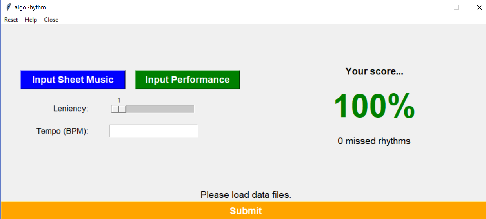
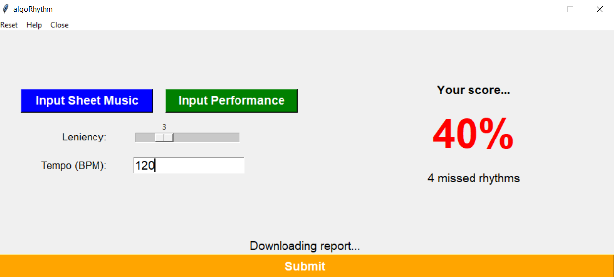
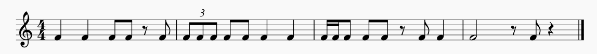

The user inputs an XML score and their performance of it.
The score is converted to the Lilypond format, which is easily parsable as text. The duration of notes is read, and the
timesteps of the onsets are then derived based on the user's tempo and outputted into a Numpy arrray. The onsets of the
user's performance are obtained using Librosa's
onset detection module.
The two arrays are compared iteratively using what we call delta-time. This is calculated as dti = timei - timei-1. If the user adds an extra note or misses an early rhythm, the later relationships are preserved, whereas if we looked solely at the timesteps of onsets, any early mistake would shift later onsets. This also aligns the first onset to zero, compensating for any empty space in the user's recording.
As a perfect performance is humanly impossible, we use a leniency value to allow for some amount of error tolerance; this is scalable by the user to control for differing skills levels. If the user's onset is outside of the tolerance, it is marked as incorrect, and the timestep and index are recorded. A marking is also made on the sheet music that was inputted detailing the type of mistake that was made. A final accuracy score is calculated at the end given by the ratio of correct notes over the total notes. This is displayed on the interface, and the marked up sheet music is outputted.
Our interface is implemented in Tkinter, Python's de-facto standard GUI package:


We used a researcher-generated dataset to test our system, consisting of XML scores, MIDI piano WAVs, and human performances of our scores at varying levels of correctness. You can access our testing set here.
